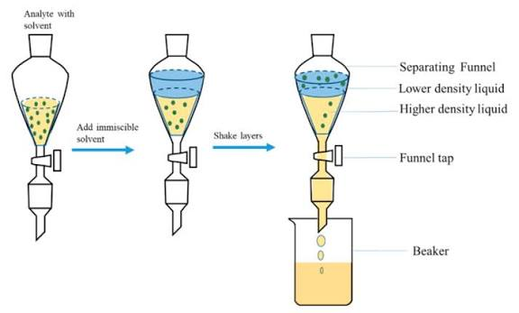

Thin-layer chromatography
| Vietnamese | ( ) Sắc kí lớp mỏng |
|---|---|
| English | Thin-layer chromatography |
| Pronunciation | /ˌθɪn leɪə ˌkrəʊməˈtɒɡrəfi/ |
| Word type | noun (as labelled in the PDFs) |
Topic 2 — Meaning (Vietnamese)
( ) Sắc kí lớp mỏng
Meaning (English)
Kĩ thuật sắc kí sử dụng lớp chất hấp phụ mỏng trên một bản phẳng./ A chromatographic technique using a thin layer of adsorbent on a flat plate.
Example
TLC is used to check the purity of a sample.
Images from the PDFs

